文字是界面里信息密度最高的元素，也是中文项目最容易踩坑的地方：字体包太大、放大发糊、描边一加就花、缺字变方块。这一章先讲清旧版 Text 与 TextMeshPro 的根本区别——有符号距离场（SDF），再把字体资源的每个参数和中文字体方案用实拍对比讲透，最后做六个案例：创建中文字体、描边投影标题、图文混排、可点击链接、打字机和数字跳动。
在 Hierarchy 右键 菜单里，你会看到两种文字：（旧版 Text，UnityEngine.UI.Text）和 （TMPro.TextMeshProUGUI）。旧版 Text 是 UGUI 最早自带的，TextMeshPro（简称 TMP）原本是第三方插件，2017 年被 Unity 收购后免费内置，现在是官方推荐的文字方案，Unity 已经把旧版 Text 放进了 Legacy 子菜单。
两者最直观的区别，用一张图就能说明。图 5-1 中左右两段文字字号都是 24，然后把 RectTransform 的 Scale 设成 5：
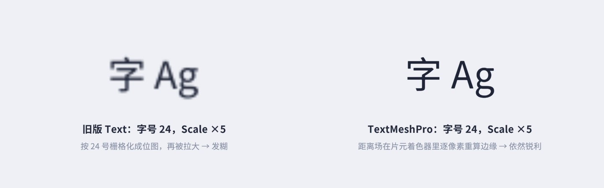
旧版 Text 使用 Unity 的动态字体系统：按“字号 × 画布缩放”把字栅格化成位图，存进一张共享的字体纹理，再像贴图一样贴到四边形上。位图的分辨率在栅格化那一刻就定死了，之后再放大（Scale、相机拉近、World Space 画布）只能插值，必然发糊。TMP 存的不是“字长什么样”的位图，而是“每个像素离字的边缘有多远”的距离场，真正的边缘在片元着色器里每个像素重新计算，所以在相当大的缩放范围内都是锐利的。
| 旧版 Text | TextMeshPro | |
|---|---|---|
| 渲染方式 | 按字号栅格化的位图 | 有符号距离场（SDF），Shader 重建边缘 |
| 放大 / 3D 场景 | 发糊，需要按显示尺寸设字号 | 保持锐利 |
| 描边 / 阴影 | Outline/Shadow 组件复制网格（4~5 倍顶点） | 材质参数，一个 Shader 完成，几乎不增加顶点 |
| 字体资源 | 直接用 TTF | 需要生成 Font Asset（图集 + 字形表） |
| 富文本 | b / i / size / color 少数几个 | 几十种标签，含图文混排、链接、渐变 |
| 排版能力 | 基础对齐、换行 | 字距、行距、段距、Margins、多种溢出模式、分页、链接文本框 |
| 文字信息 | 很少 | textInfo 提供每个字符的位置、所在行、顶点索引 |
本书除了对比演示外，所有文字都用 TMP。旧版 Text 唯一的“优势”是可以直接用 TTF、不需要生成字体资源，但这点便利远抵不上它在画质和效果上的短板。
有符号距离场（Signed Distance Field）的思路是：对字形周围的每个像素，记录它到字形边缘的最短距离，在字里面为正、外面为负（TMP 把它映射到 0~1：0.5 正好在边缘上，大于 0.5 在字里，小于 0.5 在字外）。图 5-2 是本章生成的一个字体图集，以及其中“胜”字的放大图——注意每个字周围那一圈灰色的渐变，那就是距离场。
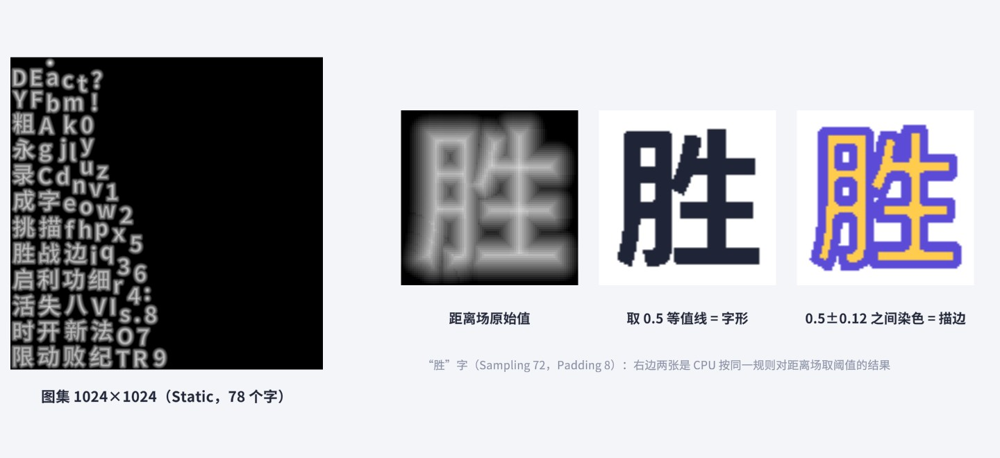
渲染时，Shader 从图集采样得到距离值 d，以 0.5 为界决定这个像素是“字”还是“背景”；边缘附近按屏幕上一个像素对应多少距离做一点平滑过渡，就得到抗锯齿的边缘。因为插值的是“距离”而不是“颜色”，放大时边缘依然是一条清晰的曲线——双线性插值对距离这种平滑变化的量非常友好。图 5-3 用一维的剖面把这个过程画出来：
理解了这个剖面，TMP 的各种效果就都“透明”了：
TMP 的 Shader 里，字面和描边的混合就是一个函数：
// 摘自 TextMesh Pro 3.0.7 Shaders/TMPro.cginc
fixed4 GetColor(half d, fixed4 faceColor, fixed4 outlineColor, half outline, half softness)
{
half faceAlpha = 1-saturate((d - outline * 0.5 + softness * 0.5) / (1.0 + softness));
half outlineAlpha = saturate((d + outline * 0.5)) * sqrt(min(1.0, outline));
faceColor.rgb *= faceColor.a;
outlineColor.rgb *= outlineColor.a;
faceColor = lerp(faceColor, outlineColor, outlineAlpha);
faceColor *= faceAlpha;
return faceColor;
}
这里的 d 已经被换算成“屏幕像素为单位、以边缘为 0”的有符号距离（在 TMP_SDF.shader 的片元函数里：sd = (bias - c) * scale，c 是采样得到的距离值，scale 与当前缩放有关）。所以无论字被放大还是缩小，抗锯齿过渡始终是一个屏幕像素宽——这就是 SDF 文字在任何尺寸下都锐利的数学原因。
TMP 不能直接用 TTF，需要先生成 Font Asset（字体资源）：一个 .asset 文件，里面包含字形表（每个字在图集里的位置和排版度量）、一张或多张图集纹理、一个默认材质。生成工具是 。第一次用 TMP 时，Unity 会弹窗让你导入 TMP Essential Resources（默认 Shader、默认字体 LiberationSans 和设置文件），点 Import 即可——配套工程已经导入好了。
右下角的 Generate Font Atlas 会生成预览，Save 存成资源。保存后选中字体资源，在 Inspector 的 Generation Settings 里还能看到并修改 Atlas Population Mode（Static / Dynamic）、Multi Atlas Textures、Clear Dynamic Data on Build 等设置，它们决定了中文字体方案，5.4 节详谈。
Sampling Point Size 和 Padding 是最容易“随手一填”、又最影响效果的两个参数。图 5-5 用同一个 TTF 生成了四个只含“永Ag”几个字的小字体资源，全部按 180 号显示：
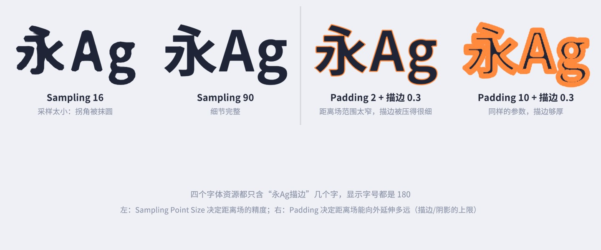
左边采样 16 时，“永”字的捺和“A”的顶角都被抹圆了，笔画边缘出现了波浪——距离场的分辨率太低，细节在生成时就丢了，Shader 再怎么算也补不回来。右边两个字体的采样字号都是 64，材质参数完全相同（描边 0.3），Padding 2 的描边只有细细一圈，Padding 10 的则很粗：TMP 会根据 Padding 自动限制效果的最大范围（材质里的 _ScaleRatioA 等系数，由 ShaderUtilities.UpdateShaderRatios 计算），保证描边不会超出距离场的有效区域而出现方块状的破面。所以“描边调不粗”时，先检查字体资源的 Padding。
配套工程的中文字体就是用代码生成的（菜单 ），核心只有一行 TMP_FontAsset.CreateFontAsset，其余是把图集和材质作为子资源存进同一个 .asset：
这个函数的签名是 CreateFontAsset(Font font, int samplingPointSize, int atlasPadding, GlyphRenderMode renderMode, int atlasWidth, int atlasHeight, AtlasPopulationMode atlasPopulationMode = Dynamic, bool enableMultiAtlasSupport = true)，参数与 Font Asset Creator 一一对应。生成静态字库也能用代码完成：先按动态模式创建，用 TryAddCharacters 把需要的字加进去，再切换成静态，见案例 5.1。
英文字体只有几百个字符，一张 512 的图集绰绰有余；中文常用字 3500 个，GB2312 有 6763 个汉字，全部做成 64 号的距离场，需要好几张 4096 的图集，几十 MB。这就是中文项目必须认真设计字体方案的原因。TMP 提供了三种工具：
Atlas Population Mode = Dynamic 的字体资源一开始图集是空的，运行时遇到没见过的字，才从 TTF 里实时光栅化、计算距离场、塞进图集。优点是什么字都能显示（只要 TTF 里有），包体里只要 TTF；缺点是首次显示新字有开销（一次几十个字通常无感，一屏几百个新字可能掉帧），而且 TTF 必须随包发布，完整的中文 TTF 动辄 10~20 MB。配套工程用的 Noto Sans SC 是按 GB2312 + 常用符号裁剪过的子集，约 2.3 MB。
动态字体在编辑器里使用时，新加入的字会被写进字体资源文件（图集纹理也会变大），提交版本库时会产生很大的二进制差异。勾选 Clear Dynamic Data on Build 让构建时清空动态数据，或者像配套工程那样提供一个菜单手动清空（ClearFontAssetData）。
Atlas Population Mode = Static 的字体资源，图集在编辑器里预先生成好，运行时不再修改，也不需要 TTF（切换到 Static 时 TMP 会清掉对源字体文件的引用，TTF 就不会被打进包里）。优点是运行时零开销、包体可控；缺点是图集之外的字一律显示不出来。适合：标题、按钮、数字这类字符集固定的文字，以及“常用 3500 字”这种覆盖绝大多数情况的主字库。
每个字体资源都有一个 Fallback Font Assets 列表。当前字体找不到某个字时，TMP 会按顺序去 Fallback 里找，找到就用那个字体的图集和材质画这个字。完整的查找顺序在 TMP_Text.GetTextElement 里：
// 摘自 TextMesh Pro 3.0.7 Scripts/Runtime/TMP_Text.cs（有删节）
internal TMP_TextElement GetTextElement(uint unicode, TMP_FontAsset fontAsset, ...)
{
// ① 当前字体资源
TMP_Character character = TMP_FontAssetUtilities.GetCharacterFromFontAsset(unicode, fontAsset, false, ...);
if (character != null) return character;
// ② 当前字体的 Fallback 列表（会递归查 Fallback 的 Fallback）
if (fontAsset.m_FallbackFontAssetTable != null && fontAsset.m_FallbackFontAssetTable.Count > 0)
character = TMP_FontAssetUtilities.GetCharacterFromFontAssets(unicode, fontAsset,
fontAsset.m_FallbackFontAssetTable, true, ...);
if (character != null) return character;
// ③ 文本组件的主字体及其 Fallback（富文本 <font> 切换过字体时）
// ④ 文本组件自己的 Sprite Asset
// ⑤ TMP Settings 里的全局 Fallback 列表
if (TMP_Settings.fallbackFontAssets != null && TMP_Settings.fallbackFontAssets.Count > 0)
character = TMP_FontAssetUtilities.GetCharacterFromFontAssets(unicode, fontAsset,
TMP_Settings.fallbackFontAssets, true, ...);
if (character != null) return character;
// ⑥ TMP Settings 的默认字体资源
if (TMP_Settings.defaultFontAsset != null)
character = TMP_FontAssetUtilities.GetCharacterFromFontAsset(unicode,
TMP_Settings.defaultFontAsset, true, ...);
if (character != null) return character;
// ⑦ TMP Settings 的默认 Sprite Asset；都没有就返回 null（显示缺字符号 □）
...
}
图 5-7 是一个真实的例子：TitleBold SDF 是只含 70 多个标题用字的静态粗体，文本里的“今晚”不在其中。左边 Fallback 列表为空，TMP 一路找到第 ⑥ 步，用 TMP Settings 的默认字体（本工程是 Regular 字重）画出了“今晚”，笔画明显比两边细；右边把动态粗体加进 Fallback，第 ② 步就找到了同字重的字，看不出任何差别。
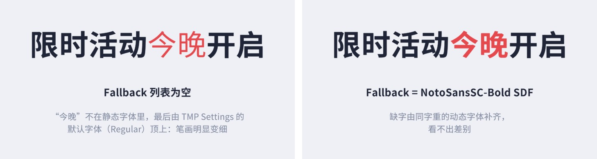
这个例子说明两件事：一是 TMP 的“兜底”很宽容，很多时候缺字不会直接显示方块，而是悄悄换成了另一种字体，测试时不仔细看很难发现；二是 Fallback 字体应该和主字体风格、字重一致，否则混排时会很突兀。
动态字体的一张图集装满后，如果勾选了 Multi Atlas Textures，TMP 会自动新开一张图集继续装，而不是报错丢字。每张图集是一张独立的纹理，用到不同图集里的字时同样会产生子网格。图集尺寸选得太小会频繁开新页，太大又浪费内存，中文动态字体 1024~2048 是常见选择。
| 文字类型 | 推荐方案 | 理由 |
|---|---|---|
| 标题、按钮、数字 | 静态字体，只含用到的字，可单独选更好看的字体 | 字符集固定，运行时零开销；可以给大字号用更大的采样 |
| 正文、对话、系统文本 | 静态常用字库（3500 字）为主 + 动态完整字体作 Fallback | 绝大多数字命中静态图集，生僻字由动态补齐，不会缺字 |
| 玩家输入（昵称、聊天） | 动态字体（或上一行组合） | 输入什么字都无法预知 |
| 多语言 | 每种语言一套字体，切换语言时换主字体或调整 Fallback | 见第 19 章 |
TMP 的 Inspector 分成 Main Settings 和 Extra Settings 两部分，排版相关的大多在 Main Settings 里。
Alignment 有两行按钮：上面一行是水平对齐（左、中、右、两端对齐 Justified、分散对齐 Flush、几何居中 Geometry Center），下面一行是垂直对齐（上、中、下、基线 Baseline、中线 Midline、大写字母高度 Capline）。Wrapping 控制是否自动换行。图 5-8 是同一段中英混排文字在四种设置下的效果：
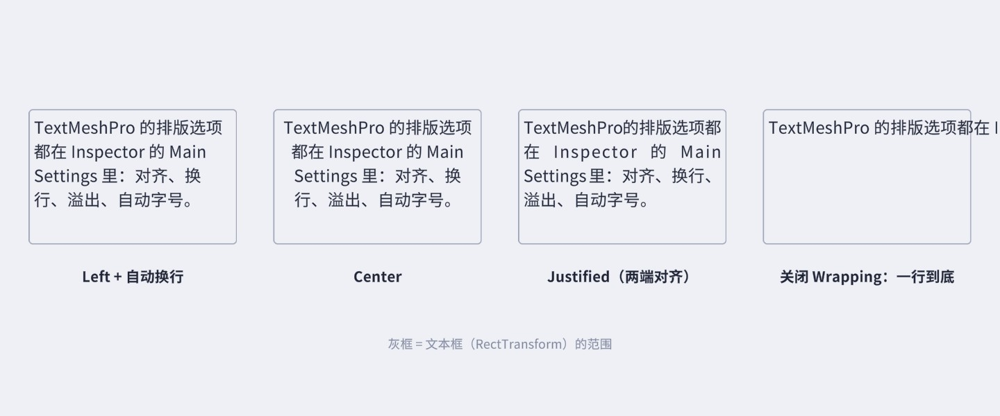
中文排版有两个细节 TMP 已经帮你处理了：一是中文可以在任意两个字之间换行，英文单词则作为整体换行（图中 “TextMeshPro” 没有被拆开）；二是避头尾，句号、逗号等标点不会出现在行首（TMP Settings 的 Line Breaking for Asian Languages 一栏引用了两个文本资源 Leading Characters / Following Characters，分别列出不能出现在行尾 / 行首的字符，默认内容已覆盖常用中文标点）。两端对齐（Justified）在中英混排时会把空格拉得很宽（第三个框里 “在 Inspector 的 Main” 之间的大空隙），中文为主的正文一般左对齐即可。
文字比文本框多时怎么办，由 Overflow 决定。图 5-9 是六种模式：
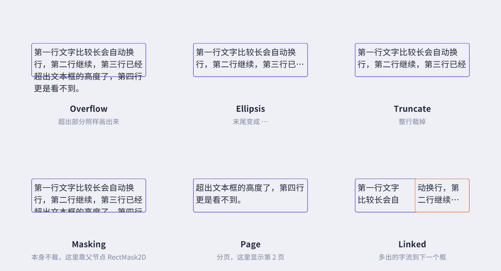
case TextOverflowModes.Masking 都和 Overflow 走同一分支），用于裁剪的 EnableMasking() 在 TextMeshProUGUI 里没有被调用，所以它自己不会裁剪任何东西。图中第四个框的裁剪效果来自父节点上的 RectMask2D（带 24 像素羽化）。需要裁剪文字时，直接用 RectMask2D。
Page把文字分成若干页，用 pageToDisplay 指定显示第几页（从 1 开始）。做翻页式的说明书、对话很方便。
Linked多出来的字流到 linkedTextComponent 指定的另一个文本框，像报纸分栏一样。目标文本框也有自己的溢出模式（图中设为 Ellipsis）。
ScrollRect为配合滚动视图保留的模式，行为同 Overflow。
勾选 Auto Size 后，TMP 会在 Min 和 Max 之间找一个最大的字号，让文字刚好放进文本框。图 5-10 是同一种按钮在不同宽度下的结果，数字是排版完成后从 fontSize 读出的实际字号：
它很方便，但要清楚代价：Auto Size 的实现是反复排版、逐步逼近——先用最大字号排一次，放不下就按比例缩小再排，直到放得下或到达下限。一次文字更新可能排版好几次。静态的按钮文字无所谓；每帧变化的文字（计时器、伤害数字）、成百上千行的列表开着 Auto Size，排版开销就会成倍增加。另外，同一行按钮各自 Auto Size 后字号参差不齐，看起来不统一（图中 48、48、34.5、28.5），很多项目宁可统一字号、文字放不下时改用 Ellipsis。Extra Settings 里的 Width / Line Spacing Adjustment 还允许 Auto Size 先压缩字宽和行距再缩小字号。
Spacing Options 有四个值：Character（字距）、Word（词距，只影响空格）、Line（行距）、Paragraph（段距，遇到换行符时额外增加）。它们的单位是em 的 1/100，也就是相对于字号的百分比，字号变了间距按比例跟着变。Margins 在 Extra Settings 里，是文本在 RectTransform 内部再缩进的距离（单位是像素），场景视图里会显示成一个黄色的内框，适合做“有内边距的文本框”而不用再套一层空物体。
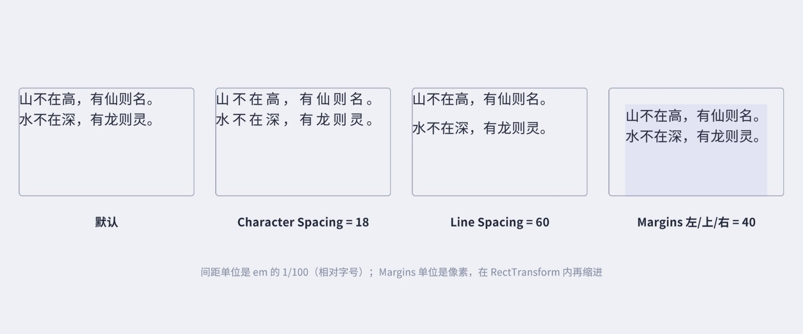
中文正文的可读性和行距关系很大，字号的 1.5 倍左右的行高读起来最舒服；TMP 的行高默认由字体度量决定（Noto Sans SC 本身行高偏大），一般 Line Spacing 保持 0 或微调即可。字距对中文的影响比英文明显得多，标题加一点字距（10~20）更有呼吸感，正文不建议调。
勾选 Rich Text（默认开启）后，文本里可以写类似 HTML 的标签来局部改变样式。图 5-12 左列是在 Text 框里写的源文本，右列是显示效果：
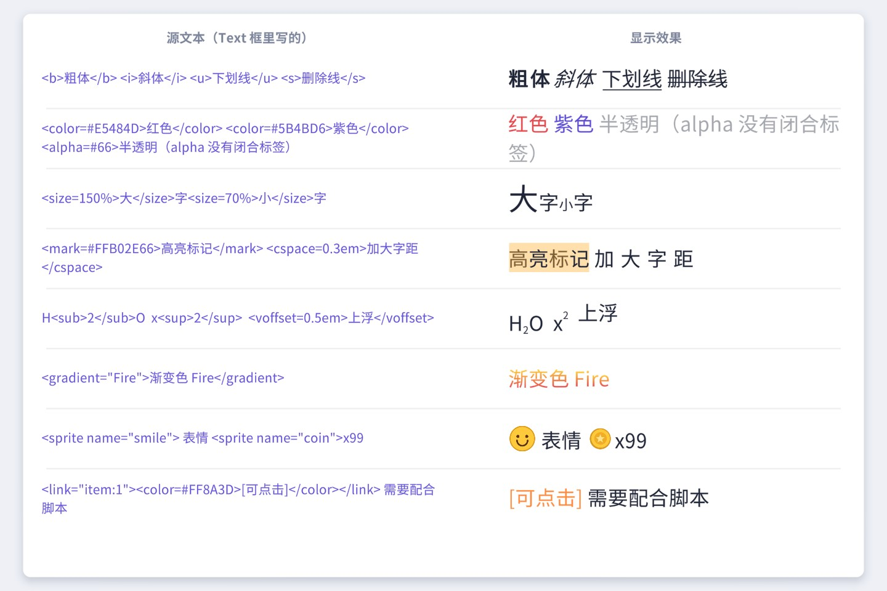
| 标签 | 作用 | 说明 |
|---|---|---|
<b> <i> <u> <s> | 粗体、斜体、下划线、删除线 | 粗体和斜体由 Shader 模拟（加粗距离阈值、顶点倾斜），不需要单独的粗体字体；字体资源可以在 Font Weights 里指定真正的粗体字体 |
<color=#RRGGBB> | 颜色 | 也支持 <color=red> 这样的颜色名、#RRGGBBAA 带透明度 |
<alpha=#AA> | 透明度 | 没有闭合标签，从这里一直生效到下一个 alpha 标签，恢复用 <alpha=#FF> |
<size=150%> | 字号 | 可以写像素值、百分比或 em |
<mark=#RRGGBBAA> | 背景高亮 | 颜色一定要带透明度，否则会把字盖住 |
<cspace=0.3em> <line-height=> | 局部字距、行高 | |
<sub> <sup> <voffset=> | 下标、上标、垂直偏移 | |
<gradient="名字"> | 渐变色 | 需要一个 Color Gradient 预设资源，放在 TMP Settings 指定的 Resources 子目录（默认 Color Gradient Presets/） |
<sprite name="x"> | 插入图片 | 需要 Sprite Asset，案例 5.3 |
<link="id"> | 链接 | 本身不改变样式也不响应点击，需要脚本配合，案例 5.4 |
<nobr> | 不换行 | 包住的内容不会被拆到两行，适合“HP +100”这类整体 |
<font="名字"> <material="名字"> | 切换字体 / 材质 | 从 TMP Settings 指定的 Resources 路径加载 |
<noparse> | 原样显示 | 其中的标签不解析，显示玩家输入的内容时有用 |
<noparse>，否则玩家可以输入 <size=500> 把聊天框撑爆，或者用 <color> 冒充系统消息。注意玩家也可能输入 </noparse> 来提前结束它，稳妥的做法是先把输入里的 < 替换掉，或直接关闭 Rich Text。描边、阴影、发光都是材质的参数。选中一个 TMP 文本，Inspector 最下方展开的就是它当前使用的材质，可以直接调 Face、Outline、Underlay、Glow 等分组。但要小心：直接在这里改，改的是字体资源的默认材质，所有用这个字体的文字都会一起变。
正确做法是创建材质预设（Material Preset）：复制一份字体材质，改成需要的样式，文本组件的 Material Preset 下拉框里选它。TMP 是怎么知道哪些材质属于这个字体的？看编辑器代码：
// 摘自 TextMesh Pro 3.0.7 Scripts/Editor/TMP_EditorUtility.cs（有删节）
public static Material[] FindMaterialReferences(TMP_FontAsset fontAsset)
{
List<Material> refs = new List<Material>();
Material mat = fontAsset.material;
refs.Add(mat);
// 按字体名的第一个单词搜索材质
string searchPattern = "t:Material" + " " + fontAsset.name.Split(new char[] { ' ' })[0];
string[] materialAssetGUIDs = AssetDatabase.FindAssets(searchPattern);
for (int i = 0; i < materialAssetGUIDs.Length; i++)
{
...
// 并且材质的 _MainTex 必须就是这个字体的图集纹理
var tex = targetMaterial.GetTexture(ShaderUtilities.ID_MainTex); // 原代码写在一个长条件里，这里拆开
if (tex != null && tex.GetInstanceID() == mat.GetTexture(ShaderUtilities.ID_MainTex).GetInstanceID())
refs.Add(targetMaterial);
}
...
}
两个条件：材质名包含字体名的第一个单词，并且_MainTex 是同一张图集。所以材质预设习惯命名为“字体名 - 样式名”。最省事的创建方式是：选中字体资源下的默认材质，Ctrl+D 复制一份，改名，再调参数。本章用代码批量创建了五个预设（Ch05/Materials），完整版 Distance Field Shader 支持 Glow，而字体默认材质用的是 Mobile 版（更便宜，但没有 Glow、Bevel 等）：
只拷贝和图集绑定的几项（图集纹理、图集尺寸、Gradient Scale、粗体权重）而不是 CopyPropertiesFromMaterial 整体复制，是作者踩过坑之后的选择：把 Mobile 版材质的属性整体拷到完整版 Shader 的材质上，两边属性表不一致，在批处理里重复执行时出现过“字面变透明”的异常结果。另外 Underlay 和 Glow 需要打开 Shader 关键字（UNDERLAY_ON、GLOW_ON），只改数值不开关键字是不会生效的；在 Inspector 里勾选对应分组时，TMP 的材质编辑器会替你打开。
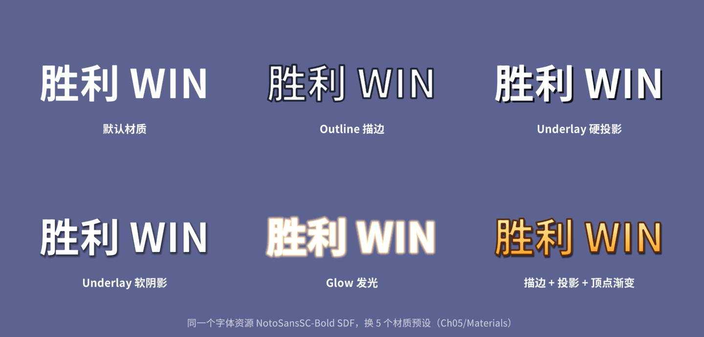
材质预设有两个很重要的性能和正确性特点：
text.outlineWidth = 0.2f），TMP 会为这个文本创建一个材质实例，它就和别人无法合批了，界面上几十个这样的文本就是几十个 Draw Call。统一用预设，样式就是可复用、可合批的。目标：为项目创建一套“静态常用字库 + 动态 Fallback”的中文字体，并且整个过程可以用一个菜单重复执行。
Assets/Fonts/），在它的导入设置里确认 Include Font Data 已勾选（动态字体运行时要读字体数据）。手工点 Creator 的问题是参数容易忘、换字表时要重新点一遍。下面这个工具函数把流程固化下来：
关键点：
TryAddCharacters 遇到 Static 会直接返回并打警告），所以先按 Dynamic 创建、加完字再切成 Static。切换时 TMP 在编辑器下会顺手清空对 TTF 的引用（源码里 atlasPopulationMode 的 setter：if (m_AtlasPopulationMode == AtlasPopulationMode.Static) m_SourceFontFile = null;）。CreateFontAsset 只在内存里创建了它们，必须 AddObjectToAsset 存进同一个文件，否则重启编辑器后字体就“丢图”了。多图集开出来的新页也一样。TryAddCharacters 抛出了空引用。读源码发现新图集命名时用到了 m_AtlasTexture.name，而这个字段要等第一次读取 atlasTexture 属性时才赋值。代码里那行看似无用的 _ = fa.atlasTexture; 就是为它准备的。配合一个菜单项，选中 TTF 右键就能用同目录下的 charset.txt 生成静态字体：
本章的 TitleBold SDF（78 个字、采样 72、Padding 8、1024 图集）和图 5-5 的四个测试字体都是这个函数生成的，图 5-2 左边就是 TitleBold 的真实图集。
调参建议：正文字号在 24~36 之间的项目，采样 40~48、Padding 4~5 通常够用；只用于大标题的静态字体可以用更大的采样（64~90）换取更锐利的拐角。字表要纳入版本管理，并在每次更新文案后重新扫描生成，否则新加的字会悄悄落到 Fallback 上。
目标：游戏结算界面的金色大标题：上浅下深的渐变、深棕描边、柔和投影，副标题带发光，信息行带软阴影。
思路：渐变用文本组件的 Color Gradient（顶点渐变，不需要贴图），描边和投影写在一个材质预设里，副标题用发光预设。
整个界面的五段文字只用了一个字体资源和三个材质预设。用 Frame Debugger 看，相同预设的文字会合在一起绘制。如果你在 Inspector 里给“胜 利”单独调了 Outline，它就会变成一个材质实例，失去这种复用。
扩展方向：Face 和 Outline 都可以指定贴图（如金属纹理、流光条纹），并设置 UV 滚动速度做出流光字；第 13 章还会用顶点动画让标题一个字一个字地弹出来。
目标：聊天气泡里文字和表情、物品图标混排，<sprite name="laugh"> 这样写就能插入图片，图片和文字基线对齐，气泡宽度随内容自适应。
思路：TMP 用 Sprite Asset 描述“一张图集纹理 + 每个精灵的矩形和度量”，富文本的 sprite 标签按名字或序号引用。官方的创建方式是：把图集纹理导入为 Sprite / Multiple 并切好，选中它执行 。本例用代码完成全部步骤：先把 8 个代码绘制的表情和 8 个物品图标拼成一张 512×512 的图集，再生成 Sprite Asset。
讲解：
spriteGlyphTable（字形：图集里的矩形 glyphRect + 排版度量 metrics）和 spriteCharacterTable（字符：名字、Unicode、缩放，指向一个字形）。这和字体资源的结构完全一样，表情在 TMP 眼里就是一种“字”。菜单命令 TMP_SpriteAssetMenu.CreateSpriteAsset 做的也是这件事，只不过它从纹理的子精灵读取矩形；TMP 只需要矩形，所以本例的纹理不必切成 Unity Sprite。GlyphMetrics(width, height, bearingX, bearingY, advance) 中，bearingY 是精灵顶边到基线的距离。设成高度的 84%，精灵就有 16% 落在基线下面，和汉字的视觉中心对齐。菜单生成的默认值是“高度减去轴心 y”，轴心在中心时只有一半在基线上方，表情会显得偏低。m_Version 的 setter 是 internal，外部代码只能用 SerializedObject 写入。不写的话，TMP 在 UpdateLookupTables 里会把它当成旧格式资源尝试升级，把我们填好的表清掉。TextMeshPro/Sprite Shader，作为子资源和 Sprite Asset 存在一起。表情和文字是两种材质，所以带表情的文本会多一个子网格（多一个 Draw Call）。使用时，把 Sprite Asset 拖到文本组件 Extra Settings 的 Sprite Asset 字段（或设为 TMP Settings 的 Default Sprite Asset），然后在文字里写 <sprite name="coin"> 或 <sprite=8>（按序号）。<sprite name="heart" tint=1> 会让精灵乘上当前文字颜色。气泡的尺寸用 GetPreferredValues(text, maxWidth, maxHeight) 算出文字需要的宽高再加上内边距；第 10 章会改用 ContentSizeFitter + LayoutGroup 做成全自动的聊天气泡。
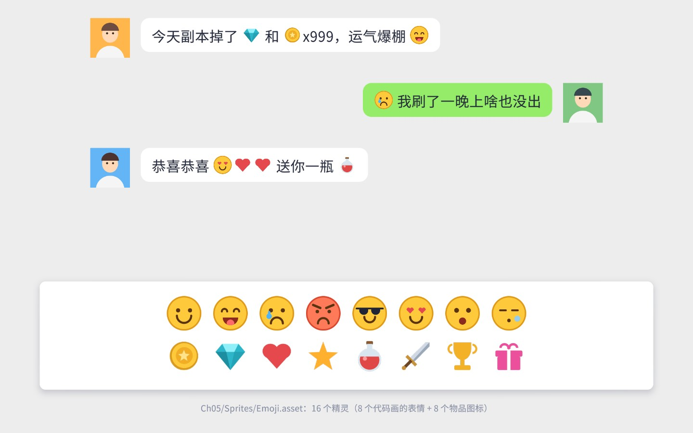
常见坑：精灵名写错时 TMP 不会报错，只是不显示；Sprite Asset 没有指定时，TMP 会去 TMP Settings 的默认 Sprite Asset 里找（导入 Essential Resources 时自带一个 EmojiOne 示例），容易出现“为什么显示的不是我的图”的困惑。表情图集请留出间距（本例每格的图标缩到 88%），否则双线性过滤会让相邻表情的边缘互相渗色。
目标：聊天/系统消息中的玩家名、物品名可以点击：鼠标悬停时变色，点击物品弹出说明卡片，点击网址打开网页。
思路：文本里用 <link="item:sword">[破晓之剑]</link> 标出可点击区域。TMP 排版时会把每个 link 的字符范围记录在 textInfo.linkInfo 里。点击时用 TMP_TextUtilities.FindIntersectingLink 判断点中了哪个链接，悬停时改这几个字的顶点色。
FindIntersectingLink 的实现是：把屏幕坐标换算到文本的世界空间，遍历每个链接的每个字符，用字符的左下角、基线以下的 descender 和 ascender 拼出矩形，逐行检查点是否在里面。第三个参数是相机：Overlay 画布传 null，Camera 画布传渲染它的相机。PointerEventData 已经替我们准备好了——按下时用 pressEventCamera，悬停时用 enterEventCamera。
讲解：
<color> 标签换掉，TMP 要重新解析和排版整段文字；直接修改 textInfo.meshInfo[].colors32 再调用 UpdateVertexData(Colors32)，只上传颜色数据。每个字符的四个顶点从 vertexIndex 开始，materialReferenceIndex 指出它在哪个子网格（用到 Fallback 字体的字在另一个网格里）。TMPro_EventManager.TEXT_CHANGED_EVENT，在网格更新后把悬停色重新刷上去。作者在拍图 5-16 时第一次没有处理这一点，悬停色被截图前的刷新冲掉了。链接 id 约定成“类型:参数”的格式，由业务代码分发：
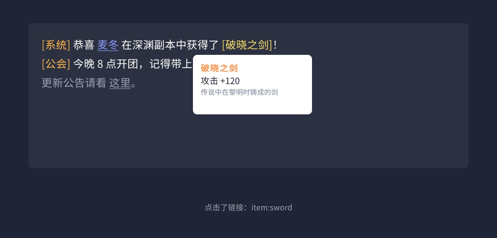
扩展方向：FindIntersectingCharacter 和 FindIntersectingWord 可以拿到点中的字符和单词，做“点击生词查词典”；链接的 GetLinkText() 返回链接内的文字，配合 id 可以实现“长按复制物品名”。说明卡片会遮挡屏幕边缘的问题，第 3 章的 Tooltip 防出屏方法可以直接套用。
目标：对话文字一个字一个字地出现，遇到逗号、句号稍作停顿；点击对话框时，正在打字就立即显示全部，打完了就进入下一句；富文本颜色正常显示，换行位置从头到尾不跳动。
思路：常见的错误写法是每帧 text = full.Substring(0, n)。它有三个问题：每帧生成新字符串（GC）、每帧重新排版；截断位置落在 <color=#FF8A3D> 中间时，半截标签会被原样显示出来；随着字数增加，一个词可能先排在行尾、下一帧又被挤到下一行，文字“跳来跳去”。TMP 的 maxVisibleCharacters 一次性解决了这三个问题：文字和排版都是完整的，只是第 n 个字符之后的字不显示。
讲解：
textInfo.characterCount 是解析富文本标签之后的可见字符数（标签不计入），必须排版之后才准确。设置 text 后立刻 ForceMeshUpdate()，不用等到这一帧末尾。maxVisibleCharacters 的改变只更新顶点的可见性，不重新排版，开销很小。对话框的点击逻辑：
扩展方向：TMP 还有 maxVisibleWords、maxVisibleLines，以及 firstVisibleCharacter；想让每个字“淡入”或“弹出”而不是生硬地出现，需要逐字修改顶点的颜色和位置，第 13 章会实现。每出一个字播放一声“哒”的音效，在 while 循环里出字的地方调用即可（注意限制频率，否则字速快时会很吵）。
目标：领取金币、战力提升时，数字从旧值“滚”到新值，先快后慢，带千分位，滚动时文字轻微放大；连续点击时从当前显示的值继续滚，不会跳变；整个过程每帧零内存分配。
讲解：
1 - (1 - t)³ 前段快、后段慢，最后几位数字缓缓停下，比匀速滚动更有“到账”的感觉。缓动函数的更多选择见第 15 章。value.ToString("N0") 每次都会分配一个新字符串，滚动中每帧调用就是每帧一份垃圾。TMP 提供了两类免分配的接口：SetText(string format, float arg0, ...)（格式里用 {0}、{0:2} 表示参数和小数位，第 4 章冷却倒计时用过）和 SetCharArray(char[], start, length)。前者不支持千分位，所以这里自己把数字逐位写进一个复用的 char 数组，再交给 SetCharArray。1 + punch × sin(πt)，开始和结束时正好为 1，中途最大。缩放的是文本自身的 Transform，不影响布局（第 10 章会解释为什么改 localScale 不会触发布局重建）。调参建议：数值变化很大时（从 100 涨到 1,000,000）固定时长的滚动会快得看不清，可以按变化量的对数调整时长；数字字体最好使用等宽数字（Tabular Figures），否则滚动时整串数字的宽度会随数字变化而左右抖动——Noto Sans SC 的数字不是严格等宽的，追求极致可以给数字单独做一个等宽的静态字体，或者用 TMP 的 <mspace=0.6em> 标签强制等宽。
mm:ss.ff 格式的计时器，用 SetText("{0:00}:{1:00}", ...) 更新。思考：TMP 的 SetText 格式里 {0:00} 和 {0:2} 的含义有何不同、写 {0:#,0} 能不能得到千分位？（读 TMP_Text.SetText 中解析格式字符串的那段源码验证。）<link> 包进 <u> 重新设置文本，和顶点色方案比较各自的代价）。